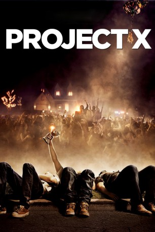

#1036 Project X
 gesehen am 29.12.2016
gesehen am 29.12.2016
 
 IMDB-Wertung: 6.7 / 10
IMDB-Wertung: 6.7 / 10  Metascore: 48
Metascore: 48 
Als seine Eltern weg sind, will Thomas zusammen mit zwei Highschool-Freunden eine kleine Geburtstagsparty im elterlichen Domizil schmeißen. Ziel ist es, etwas besser bei den Gleichaltrigen anzukommen und gleichzeitig auch endlich einmal in den Fokus des weiblichen Geschlechts zu geraten. Doch nach kurzer Zeit, wird aus der kleinen Party ein rauschendes Fest, inklusive zahlreicher mehr oder weniger geladener Gäste, Unmengen an Alkohol, einer guten Portion Sex, einiger Hunde und einem Auto im Pool. Jetzt müssen die drei Freunde schauen, wie sie wieder einigermaßen gut aus der Sache rauskommen.
Jahr: 2012
Dauer: 88 Minuten
FSK: 16
Land: USA Studio: Warner Bros.Tonspuren: DD5.1 - ,
Untertitel: Deutsch,
Auflösung: 720p (1280x720) Größe: 3788 MB
Genre: Komödie
Regisseur: Nima Nourizadeh
Drehbuch: Matt Drake, Michael Bacall, Michael Bacall
Soundtrack:
Darsteller:
 Thomas Mann als Thomas
Thomas Mann als Thomas Oliver Cooper als Costa
Oliver Cooper als Costa- Jonathan Daniel Brown als JB
- Dax Flame als Dax
- Kirby Bliss Blanton als Kirby
- Brady Hender als Everett
- Nick Nervies als Tyler
 Alexis Knapp als Alexis
Alexis Knapp als Alexis Miles Teller als Miles
Miles Teller als Miles Peter Mackenzie als Dad
Peter Mackenzie als Dad- Caitlin Dulany als Mom
- Rob Evors als Rob
- Rick Shapiro als T-Rick
 Martin Klebba als Angry Little Person
Martin Klebba als Angry Little Person- Pete Gardner als Older Guy
- Nichole Bloom als JB's Girl
- Sam Lant als Freshman Party Crasher
- Brendan Miller als Brendan
- Brent Tarnol als Locker Room Guy
- Jarod Einsohn als Party Goer
- Chet Hanks als Party Goer
 Kevin Dunigan als Police Officer
Kevin Dunigan als Police Officer- Sophia Santi als Hispanic Neighbor
- Jodi Harris als Older Guy's Wife
- Robb Reesman als Police Captain
- Big Boy als Big Boy
 Jimmy Kimmel als Jimmy Kimmel
Jimmy Kimmel als Jimmy Kimmel- Jillian Barberie als Jillian Barberie
 Lucas Di Medio als Soccer Dude , uncredited
Lucas Di Medio als Soccer Dude , uncredited- Ciara Hanna als Ecstasy Girl , uncredited
- Sunshine Manderbach Johnson als Gym Class Girl / Popsicle Girl , uncredited
- Catherine Lidstone als Party Goer , uncredited
- Patrick Phan als Party Goer , uncredited
- Shawn Turner als Party Jock , uncredited
- Henry Michaelson als Freshman Party Crasher
- Kyle Kwasnick als Locker Room Guy
- David Sanchez als High School Student
- Ayydé Vargas als High School Student
- Chelsea Carbaugh-Rutland als High School Student
- Zach Lasry als High School Student
- Michael C. Stretton als High School Student
- Andrew Harbour als High School Student
- Allan Chanes als High School Student
- Holden Morse als High School Student
- Raz Jelvani als Party Goer
- Briana Mari Wilde als Party Goer
- Julian Evens als Party Goer
- Jesse Marco als DJ
- Chic Daniels als Police Officer
- Colleen Flynn als Mrs. Stillson
Datei: X:\2012(N-Z)\Project X (2012, FSK16, 1280x720).mkv seit 15.05.2015
Festplatte: HD 2012(N-Z)-2013(A-H)
 Es gibt insgesamt 138 Filme in der Gruppe '2012(N-Z)'
Es gibt insgesamt 138 Filme in der Gruppe '2012(N-Z)'